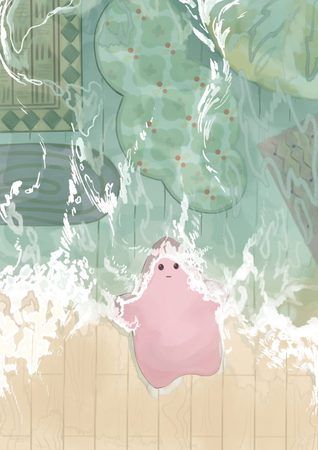

일단 깔아본 이야기
오랜만에 복학과 함께 다시 시작된 서울생활. 엘리베이터도 없는 5층 원룸을 구했다.
어딘가 엉성해 보이는 이 5층은 나 혼자 쓴다고 한다. 널찍한데 드러운 옥상도 내 거!
흐린 눈으로 옥상을 뒤로 한 채.. 하나 둘 내 취향대로 꾸며 나갈 생각에 신이 나서 이것저것 사려고 담기 시작하는데.. 이걸 다 샀다간 가정경제가 무너지고, 원룸 바닥이 무너지고, 사회가 무너지고, 세계가 무너질 것 같은. 그런 장바구니였다.
구름 무늬 반원 러그와 타일 같은 패턴을 가진 네모네모 러그. 구름 러그의 사진이 묘하게 생활감이 넘친다는 의견이 있었다. 제품사진을 구하지 못해 직접 찍은 나의 노고가 느껴져 버린 걸까.. 곤란하니 넘어가도록 하자.
어울릴 것 같지 않은 둘이지만 그것 다름 공간 분리가 되는 느낌을 준다. 혹시 반박할까 봐 방 사진은 내 맘대로 안 넣었다. 작가적 권력의 정수를 느끼도록 하자. 언젠가 사고 싶은 러그를 백 장은 사서 다 깔 수 있는 멋진 어른이 될 수 있을까. 나는 그런 취향 맥시멀리스트가 될 수 있을까 생각했다.
일러스트레이션 수업때도 같은 고민을 활용한 일러스트를 그렸다.
물밀 듯 들어오는 취향의 바다. 내 공간을 잠식하는 나의 맥시멀 위시리스트를 감당하고자 하는 소망이 담겨있다.
러그는 그런 내 소망을 상징하는 소재가 되었다. 아직은 인스타그램 저장 탭이나 쇼핑몰 장바구니에 잔뜩 깔려있는 내 러그들. 언젠가 진짜 바닥에 깔아줄게 조금만 기다려줘!